T-Day 001｜起飛
飛機誤點了。
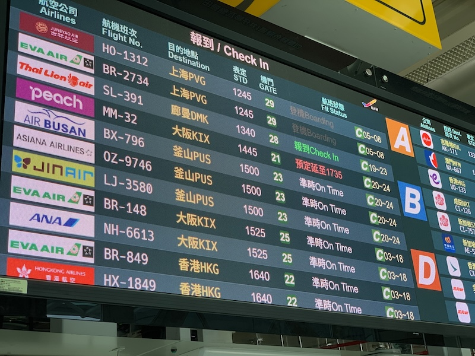
延後三小時起飛。
十二點就到機場，只好再喝一杯星巴克。
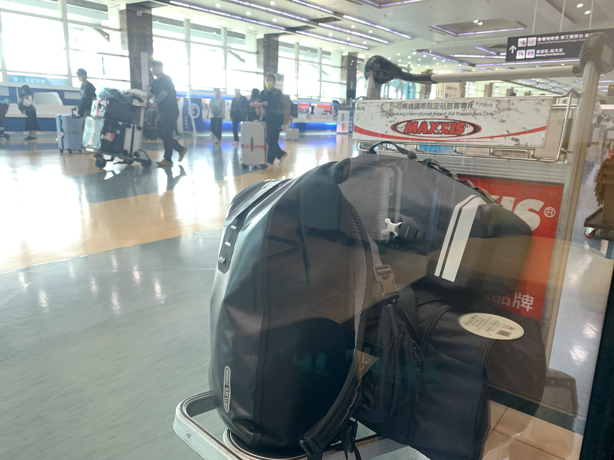
這些就是這幾個月的家當了。請好好跟著我回家。
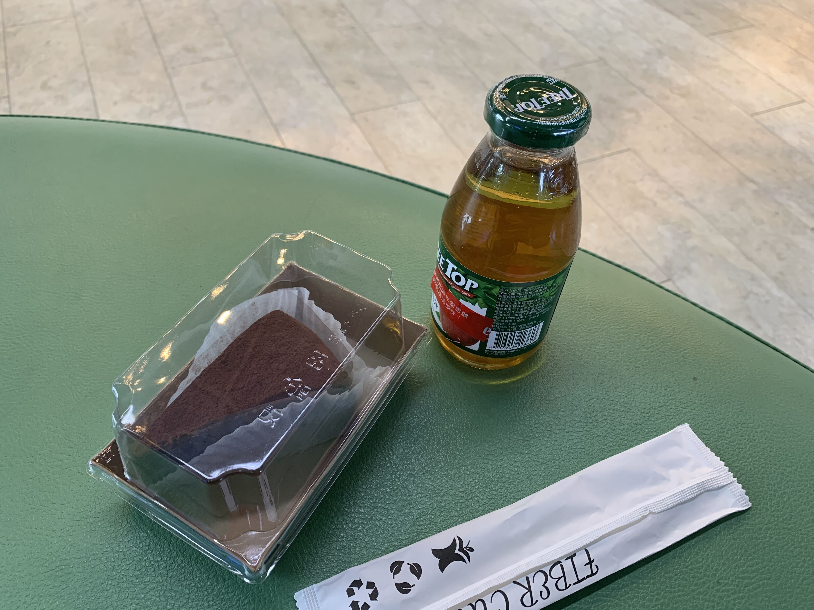
三點開始排隊托運行李，獲得200元的誤點餐券。
這蛋糕有淋餘土的質感。
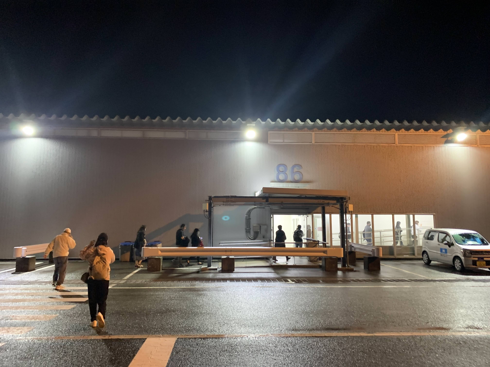
晚上九點半左右抵達關西機場第二航廈。
相當寒冷。看了手機，體感溫度5度。
搭接駁車到T1，領完行李已經十點了。
雖然民宿老闆很好心地提供到京都的巴士資訊，然而要他等到凌晨一點實在不好意思。
今天就決定在機場過夜了。
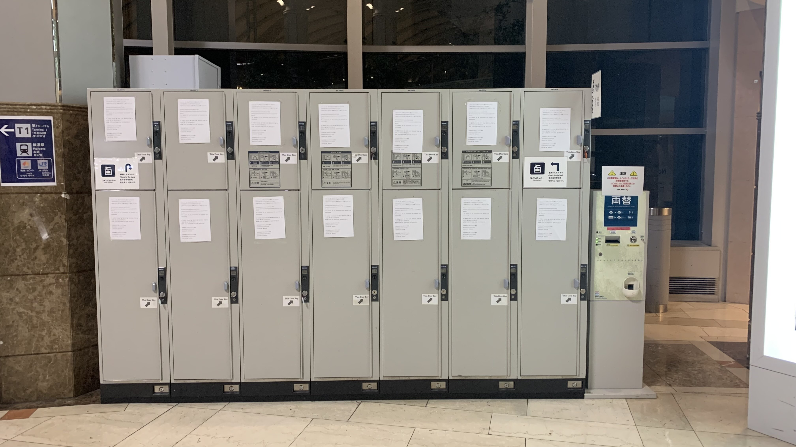
先將行李存入寄物櫃。
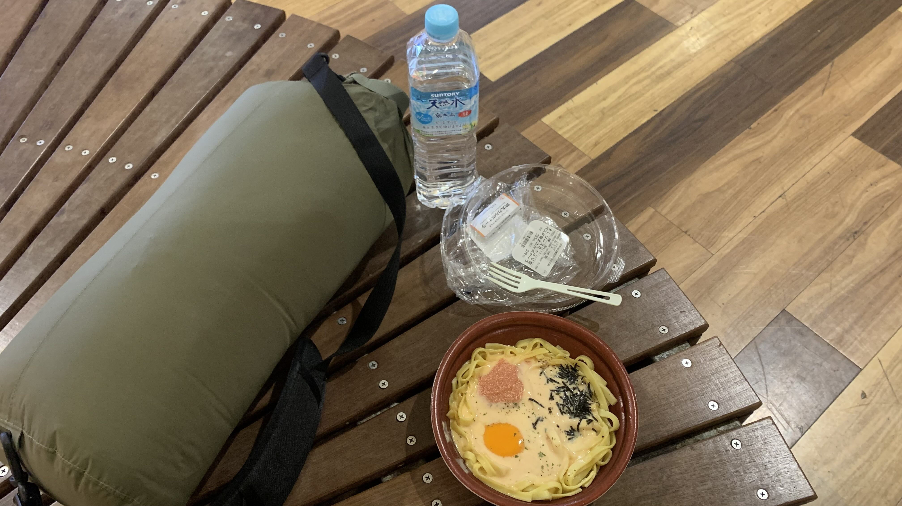
只帶上睡覺的家當，在Lawson買了微波明太子蛋黃奶油麵。
吃完飯準備找個角落睡覺。
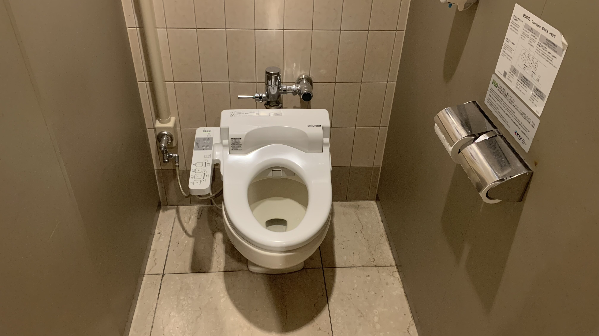
由於太經常到大阪，總覺得沒有出國的實感。
直到進入廁所坐到便座上，那溫熱、貼心的觸感，朝著目的地匆忙的心終於鬆懈下來。
這就是日本啊，這一刻我的心確實地被日本承接住了。
坐在溫熱的座便上，想起谷崎潤一郎在《陰翳禮讚》中對於日本舊式廁所的視覺與周遭環境聲音的描述。
想來日本文學與廁所的淵源甚深。像他那樣對潔淨的現代式廁所抱有疑問的人，能夠抗拒免治馬桶的包容性嗎？
上完廁所發現沙發區已被佔滿，趕在十二點以前找到一個角落攤開睡袋。
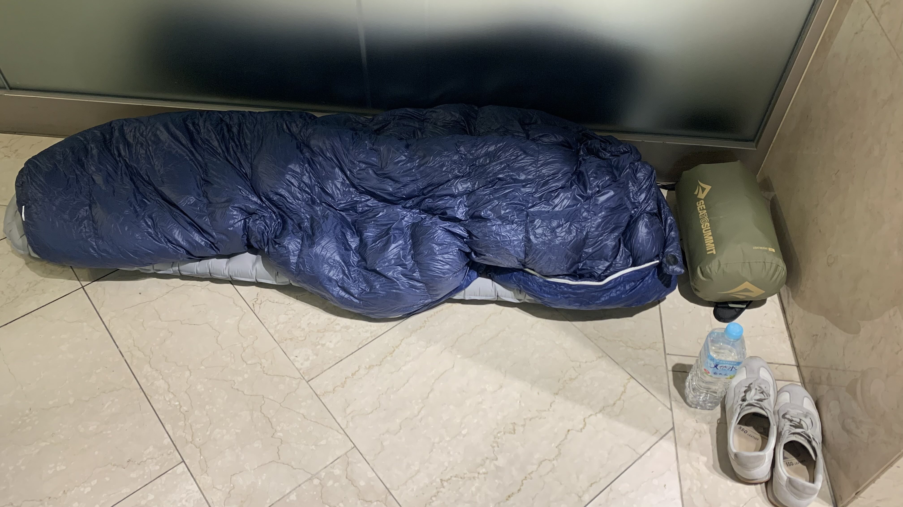
正準備入睡，不知道哪裡的廣播傳來啦啦啦啦啦啦啦啦～啦啦啦啦啦啦啦啦～的歡快歌聲，直到十二點過後仍然沒有停止的意思。
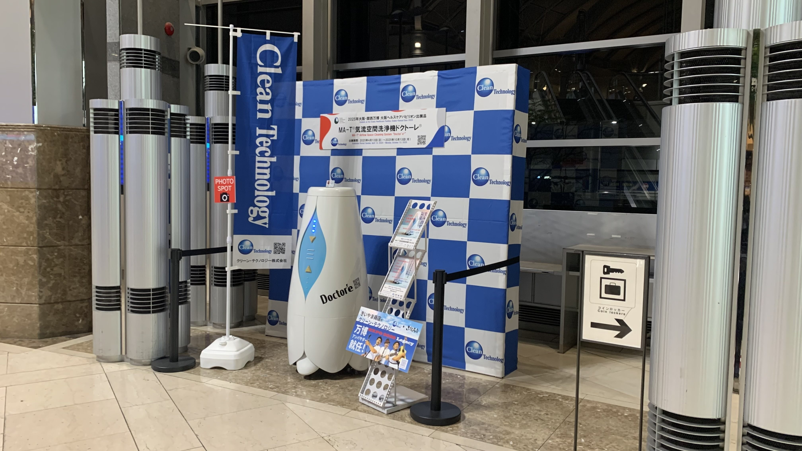
就是他。
說真的，沒有人的時候是不是可以休息一下呢？
放行李時沒有把耳塞拿出來實在失策。
總之決定轉移陣地，收了睡袋和睡墊走到第一航廈。
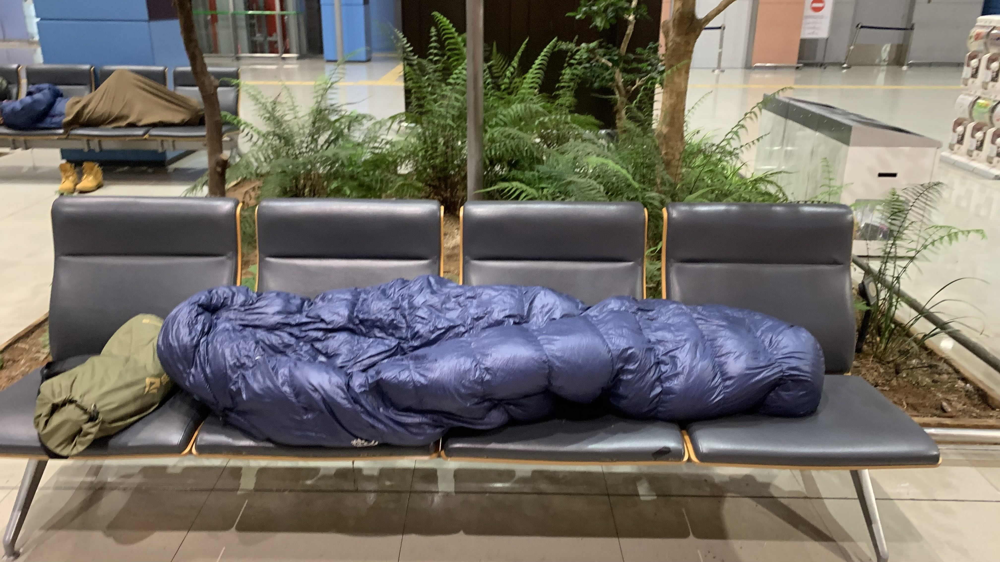
重新攤開睡袋正準備入睡之際。
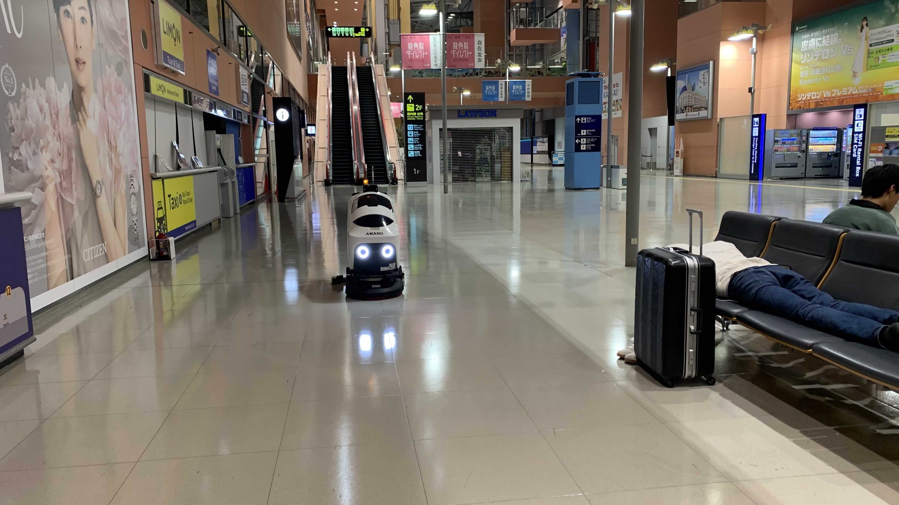
又來了一位小兄弟，一邊掃地一邊發出 「右に曲がります」（我要右轉了！）、「自動走行中です」（自動行駛中！）。
與商場機器人歡快的嗓音不同，這名機器人的聲音聽起來相當可靠踏實。
直到半夜一點多他們仍然沒有休息。
日本的機器人這麼捲嗎。･ﾟ･(つд`ﾟ)･ﾟ･
大約一點半左右，決定回到應援歌機器人的身邊。來為我打氣吧！機器人｡ﾟヽ(ﾟ´Д`)ﾉﾟ｡
今日花費： 800 寄物櫃、780 晚餐+水